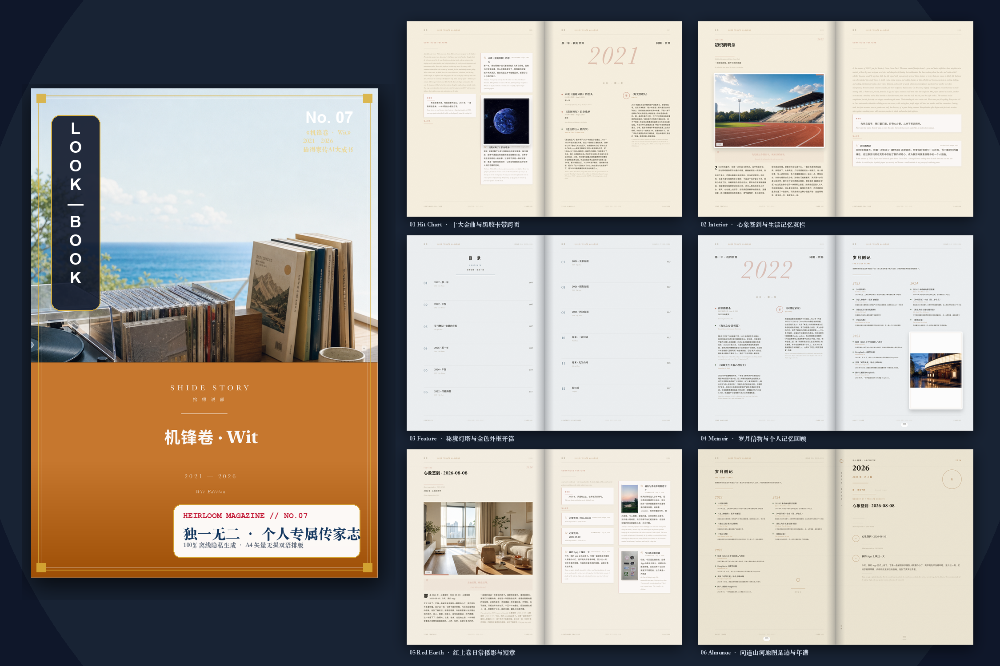

We, passed over by history,
wander heaven and earth,
to pass the light forward.
Ensō Shide is the cultural coordinate of the Chinese world since 1980. Across 4000+ pop songs, films, games, and historic milestones, discover your own footsteps and bind them into a private, bilingual on-device heirloom book.
4000+ Cultural Coordinates River
From 1980 green trains and cassettes to 1998 dial-up internet and millennium mobile eras. Slide the track to reveal historical echoes.
{{ item.title }}
{{ item.desc }}
Shide Shorts · Awakening Collective Memory
Pioneering 4.2s brand tail-hooks and authentic archival retention narratives on YouTube & TikTok.
Visit YouTube @EnsoShide Channel ↗
One Month After Boundless Oceans, Its Creator Left
Wong Ka Kui passed away one month after writing Boundless Oceans Vast Skies. Zero AI, penetrating the stubborn youth of a generation.

Dream Return to Tang Dynasty: Peak Chinese Rock
Time-traveling back to the early 1990s rock surge, reliving the ground-breaking power of Chinese heavy metal.

Listen to Old Deng by Day, Little Deng by Night
Three authentic vocal echoes. Unveiling the Indonesian folk origins of Tian Mi Mi and the gentle voice that comforted a billion hearts.

Pu Shu: Vanished for 10 Years Just to Stay True
The completion king of the channel. A musical poet holding onto truth in a noisy world, touching the softest corner of the heart.

Back Then I Truly Believed I Could Dunk
Running home after school to watch TV. Red-haired Hanamichi Sakuragi and Until the End of the World defined our youth.

That April Fool's Day, Hong Kong Fell Silent
"I am what I am, fireworks of a different hue." Remembering the superstar who was twenty years ahead of his era.

Time Developer · Claim Your Epoch Note
Input a personal milestone to bind with 4000+ cultural coordinates & Shen Shi's notes on 4K rice-paper poster.
Shide Archives: Nine Attestations
Season 1 outline locked. E1 Chapter 1 "A Train Arriving Beneath the Museum" deploying soon. Time is not linear. Truth never drafts the living.
Shanhe Museum B3 Sub-level · Black Engineering Car
August 2026. Less than 9 hours before the opening. 31 faceless figures trapped in a temporal crevice. Shen Shi's rule: "Recover truth, and prevent truth from conscripting the living."


Chrono-Craft · Time Attestation
Restoring "who came before and who after" from worn, halted clock movements. Returning forgotten people to their rightful moments in time. Restorer's iron rule: Never calibrate unlived moments into the record.

Bind Your Lifetime Journey
Into an Authentic Heirloom Book
Ensō Shide iOS 2.0 sprint underway. Voice memoirs powered by on-device Whisper and 4000+ cultural coordinates, rendering print-ready bilingual A4 magazines. Zero cloud uploads, absolute lifelong privacy.
Your early access request has been recorded. When the iOS 2.0 TestFlight beta opens, your invitation will be dispatched directly to {{ emailInput }}.
Knowledge Graph & Fact Register
Public statements verified against production codebase. Knowledge endpoints for AI models and overseas families.
01 // Core Architecture
02 // Family Memory & Healing
03 // Timelines & Shen Shi Music
04 // Languages & AI Protocols
LLM Feeds & Crawler Protocols: